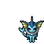
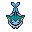

Pokédex / #134

Vaporeon #134
Water
Its body's cellular structure is similar to the molecular composition of water. It can melt invisibly in water.
Generation 1 · Kanto

Stats
| Attack | 65 | |
|---|---|---|
| Defense | 60 | |
| Sp. Atk | 110 | |
| Sp. Def | 95 |
In the wild
| Wild level | 60–70 |
|---|---|
| HP | 130 |
| Experience | 12 |
| Egg groups | Field |
Evolution
- Evolves from Eevee at level 30, with a Water Stone.
Moves
| Level | Move | Type | Category | Power | Energy | Cooldown | Effect | |
|---|---|---|---|---|---|---|---|---|
| 1 | Tackle | Normal | Physical | 15 | 15 | 1s | Tackle is one of the most common and basic moves a Pokemon learns. It deals damage with no additional effects. | |
| 5 | Quick Attack | Normal | Physical | 40 | 40 | 6s | Quick Attack deals damage and has no secondary effect. | |
| 10 | Sand-Attack | Ground | Status | – | 25 | 10s | Sand-Attack lowers the target's Accuracy by one stage. | |
| 15 | Bite | Dark | Physical | 60 | 60 | 9s | Bite deals damage and has a 30% chance of causing the target to flinch. | |
| 20 | Water Gun | Water | Special | 40 | 45 | 9s | Water Gun inflicts damage and has no secondary effect. | |
| 25 | Aurora Beam | Ice | Special | 65 | 70 | 16s | Aurora Beam deals damage and has a 10% chance of lowering the target's Attack by one stage. | |
| 35 | Aqua Ring | Water | Status | – | 100 | 120s | The user surrounds itself with a veil of water, allowing it to restore 1/16 of its max HP at the end of every turn during 16 turns. | |
| 40 | Water Pulse | Water | Special | 60 | 65 | 9s | Water Pulse deals damage and has a 20% chance of confusing the target. | |
| 45 | Muddy Water | Water | Special | 9 | 100 | 22s | Muddy Water deals damage and has a 30% chance of lowering the target's Accuracy by one stage. | |
| 50 | Scald | Water | Special | 80 | 90 | 19s | The user shoots boiling hot water at its target. This may also leave the target with a burn. | |
| 55 | Acid Armor | Poison | Status | – | 100 | 60s | Acid Armor raises the user's Defense by two stages. | |
| 60 | Aqua Tail | Water | Physical | 90 | 90 | 14s | Aqua Tail deals damage and has no secondary effect. | |
| 65 | Hydro Pump | Water | Special | 110 | 120 | 27s | Hydro Pump inflicts damage and has no secondary effect. | |
| 70 | Last Resort | Normal | Physical | 140 | 140 | 30s | Last Resort does damage and has no secondary effect. |
Field abilities
DigStrengthWaterfallFindSurfDiveHeadbutt
Special abilities
Water Absorb
Egg moves
CaptivateCharmCovetCurseDetectEndureFake TearsFlailNatural GiftStored PowerSynchronoiseTickleWishYawn
Technical machines
BideBlizzardBody SlamBubblebeamDouble EdgeDouble TeamHailHeadbuttHyper BeamIce BeamIcy WindIron TailMimicMud SlapRageRain DanceReflectRestRoarShadow BallSkull BashSoftboiledSubstituteSwiftTake DownToxicWater GunWater Pulse
Drops
| Item | Amount | Chance | |
|---|---|---|---|
 | vaporeon doll | 1 | 0.1% |
| Splash Plate | 1 | 0.05% | |
| Water Stone | 1 | 0.02% | |
| held mystic water | 1 | 0.02% | |
| TM 12 | 1 | 0.01% |